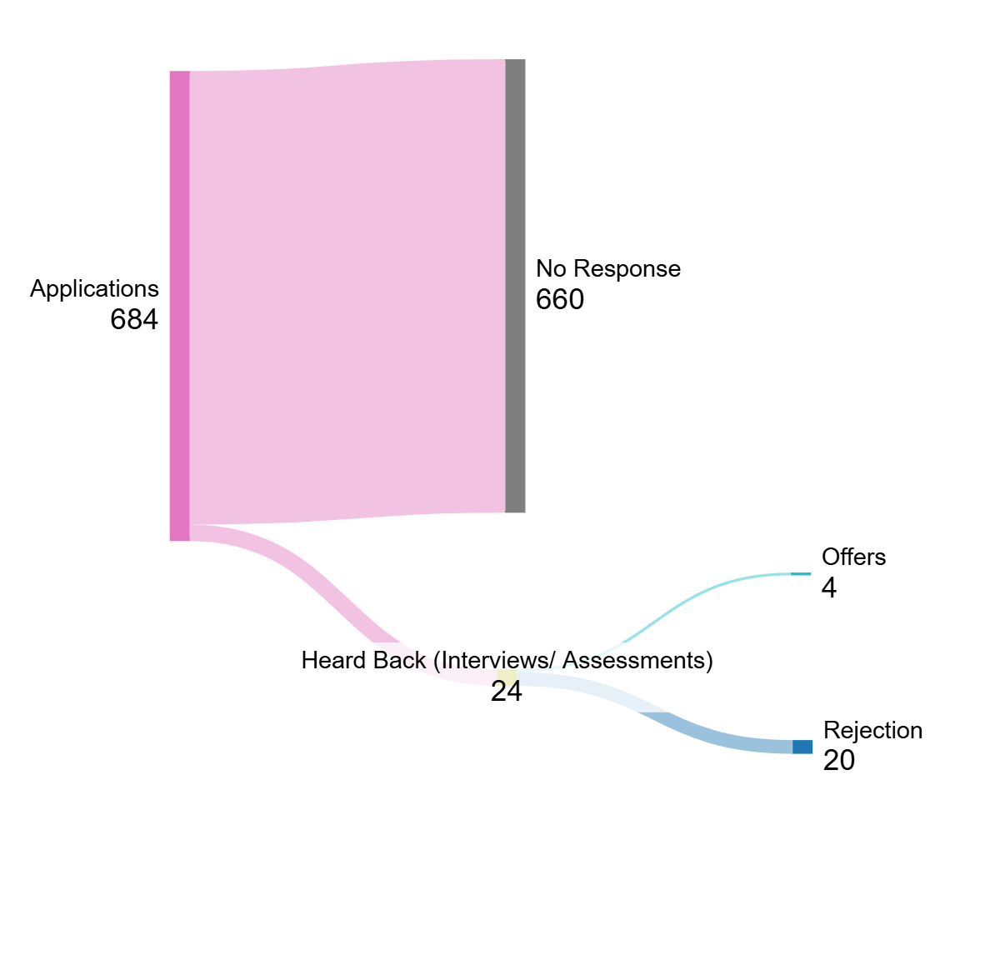

My Recruiting Cycle
I applied to a lot of positions and reached out to a lot of people! Here’s a snapshot of how it went!
After countless rejections, I eventually found success by persistently following up and utilizing connections with recruiters.
Back to Campaign